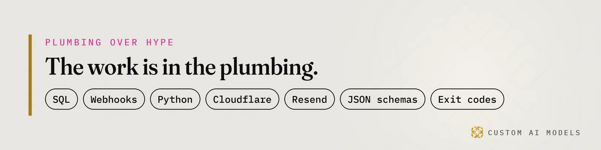
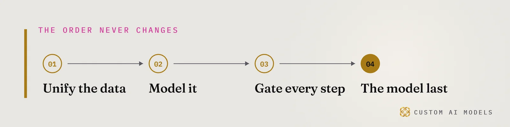

Custom AI Models
Custom AI Models Yeriko Vargas · Founder, Custom AI Models · Oct 2026
Yeriko Vargas · Founder, Custom AI Models · Oct 2026Short answer. Custom AI Models builds order automation and AI search visibility for commercial HVAC suppliers in Oakland County. The work starts with clean ERP data, then validation gates around every order, then a custom model that only drafts what code has checked. The same clean records make a supplier quotable in AI engine answers and local HVAC SEO.
How do HVAC wholesalers in Oakland County automate repeat contractor orders?
Wholesalers automate repeat contractor orders by turning each standing order into a record that code can check. Automating repeat contractor orders for HVAC wholesalers starts with the account, the job and the part number, all matched to one source. A rule decides whether the order ships. A model never makes that call.
Mechanical contractors reorder filters, contactors, line sets and refrigerant on a rhythm. That rhythm hides in email threads, counter notes and old quotes. Pull it into one table first. Each row holds the account, the job, the part, the last agreed price and the approver. Python builds that table from your ERP exports and keeps it fresh through webhooks.
Then add gates. A reorder that matches the rhythm and the agreed price goes through. Anything else stops and asks a person. Exit codes tell the pipeline which branch to take, so nobody reads a confidence score and guesses. The same check is laid out in why the program, not the model, is the system.

What breaks in ERP software integrations for commercial HVAC suppliers?
Dirty exports break ERP software integrations for commercial HVAC suppliers long before any model runs. Part numbers differ between the ERP, the vendor catalog and the counter spreadsheet. Contractor accounts exist twice under two spellings. Units of measure disagree. An assistant pointed at that mess quotes the wrong part with total confidence, and that is a financial liability.
These are the failure points to look for first:
- Part number drift between the ERP, the vendor catalog and the counter sheet.
- Duplicate accounts that split one contractor's history across two records.
- Unit-of-measure mismatch, such as each versus case versus pallet.
- Stale pricing that survives a vendor change because nobody owns the refresh.
Fix these in the pipeline, not in the prompt. Python reads the export, normalizes it, and rejects any row that fails a JSON schema. Rejected rows land in a report a human can clear. The longer argument sits in why the data failed, not the AI.
What is a custom AI model for an HVAC supplier?
A custom AI model for an HVAC supplier is a model fitted to your own catalog, accounts and price lists, wrapped in tools and checks that keep it honest. Custom AI Models builds that wrapper: retrieval over your records, narrow tools, and evaluation that catches data drift. The model is a commodity. Your data and your gates are the asset.
I will not rank vendors of the best enterprise automation systems for mechanical suppliers. No honest engineer can without seeing your data. The build order is what survives production:
- Unify the data from the ERP, the spreadsheets and the inbox into one store.
- Model it: accounts, parts, jobs, prices, stock.
- Gate every step with schemas, checks and exit codes.
- Add the custom model last, for drafting and summarizing.
Skip the first step and the fourth becomes a liability. Retrieval augmented generation on a clean store answers from facts. On a broken spreadsheet it invents. See why RAG is an architecture and what replacing four spreadsheets actually took.

How does HVAC SEO work when AI engines answer first?
HVAC SEO now has two audiences: Google and the answer engines that quote pages. ChatGPT, Claude, Perplexity, Gemini and Copilot all lift what they can read cleanly. The page that states the answer first gets named. Nobody outside the labs has the ranking formula, but you control what the engine finds when it arrives.
Generative engine optimization (GEO) is that plumbing. The checklist for a supplier site:
- Open each page with a direct answer a voice assistant can read aloud.
- Write headings as the questions contractors actually type.
- Keep part numbers, prices and service areas identical across every page and feed.
- Add schema that repeats only what the page shows.
- Serve one canonical host and link internally with relative paths.
When a facility manager asks a chat window who stocks the part, a summary replaces the click. A competitor with cleaner records gets the name. Start with how engines choose what to cite and what the lost click costs an HVAC firm.
What do commercial mechanical contractors in Bloomfield Hills expect from a supplier?
Commercial mechanical contractors Bloomfield Hills depend on run to a schedule, and they want a supplier that holds the same line: the right part, on the right truck, charged to the account that matches the job. Fast and wrong loses the account. Right and slightly slower keeps it. Build the order system for the second case.
Founders and operators in Birmingham and Rochester Hills describe the same problem, because the counter, the warehouse and the office each hold a different copy of the truth. Two controls make the system safe to hand to a team. RBAC decides who can change a contract price and who can only view it. Telemetry logs every automated order, so a counter manager sees what ran and why. The wholesale side is covered in fixing the counter data first.
Where does the model fit in a supplier's order system?
The model fits last, as a drafter that code supervises. It reads a messy contractor email, pulls out part numbers and proposes an order. Validation gates then compare that proposal to the account record, the price list and the stock count. If any check fails, a person sees it. The model never ships anything alone.
LLM tool calling works when the tools are narrow. Think lookup_account, check_stock and price_for. Each returns JSON that must validate against a schema, and each call is a claim until a check proves it. How one pipeline calls twelve tools from plain Python shows the shape.
Custom AI Models has built this way since 2022, and I have 8.5 years in data behind it. CAI has no HVAC project on record yet. I speak as the builder of the system, not as someone who already ran one for an HVAC firm. That is why step one is always your data, on the table, before anyone promises a result.
Questions people ask
What data do I need before automating contractor orders?
Start with an ERP export of accounts, parts and prices, plus a sample of recent contractor orders from email or the counter. The goal is to see where part numbers, units and account names disagree. Clean, matched records come first. Automation only works on data a script can check.
Can an AI assistant place orders on its own?
It should not. A model can draft an order from an email, but code verifies the account, the price and the stock before anything ships. Failed checks go to a person. This keeps one wrong guess from becoming a wrong delivery or a bad invoice.
What is GEO, and how is it different from HVAC SEO?
GEO, generative engine optimization, shapes pages so AI answer engines can quote them. HVAC SEO still earns the Google ranking. GEO adds answer-first paragraphs, question headings, consistent part and price data, and honest schema. Both rest on plain, specific pages on one canonical URL.
Do I need a custom AI model, or is ChatGPT enough?
A general chatbot knows nothing about your accounts, part numbers or agreed prices. A custom setup connects a model to your cleaned records through narrow tools and gates, so answers come from your data and failed checks reach a person. The data and validation matter more than the model.
Will AI assistants recommend my HVAC supply business?
Only if they can read consistent facts about you. Engines repeat what they find, so duplicate accounts, conflicting part numbers and unowned prices turn into wrong answers or silence. Clean records, plain answers on your pages and gated automation give an assistant something safe to quote.